Bring your own API key, connect any provider, and get a native coding experience — file explorer, multi-session tabs, rewind & checkpoints, full SDK control.
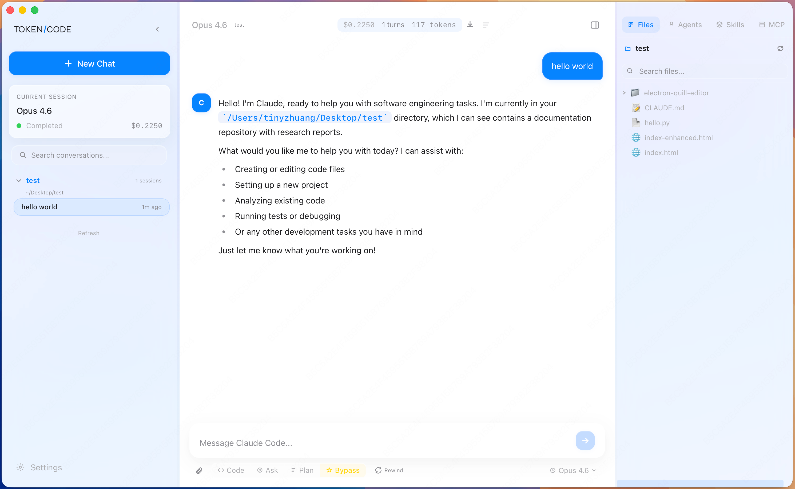
7 preset providers + custom endpoints. Anthropic, DeepSeek, Zhipu, Qwen, Kimi, MiniMax, OpenRouter — or add yours.
Gitee mirror auto-fallback. Pre-configured Chinese API endpoints. System proxy detection. Full Chinese UI.
Structured permission requests. Four work modes — code, ask, plan, bypass. Switch model on-the-fly.
Tauri 2 native desktop feel. Multiple themes, light/dark mode. macOS signed & notarized.
TOKENICODE wraps Claude Code CLI with a visual interface while preserving the full power of the command line.
Choose from 7 presets or configure your own endpoint in Anthropic or OpenAI-compatible format. Quick connection test with response time display. One-click config import/export. Per-provider custom model support.
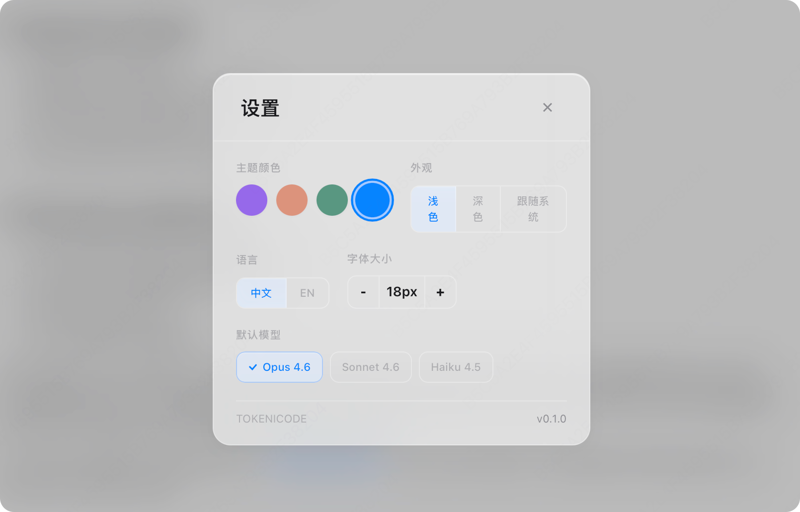
Real-time NDJSON streaming with distinct visual phases for thinking, writing, and tool execution. Slash command autocomplete, Cmd+K command palette, agent activity monitor, and built-in skills & MCP management.
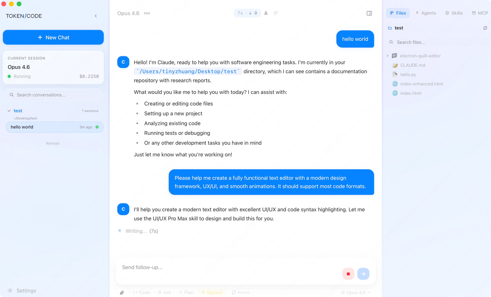
Concurrent multi-session tabs with seamless switching. Pin, archive, batch-delete with multi-select. Smart date separators. AI auto-generates titles. Export to Markdown or JSON. Resume any session.
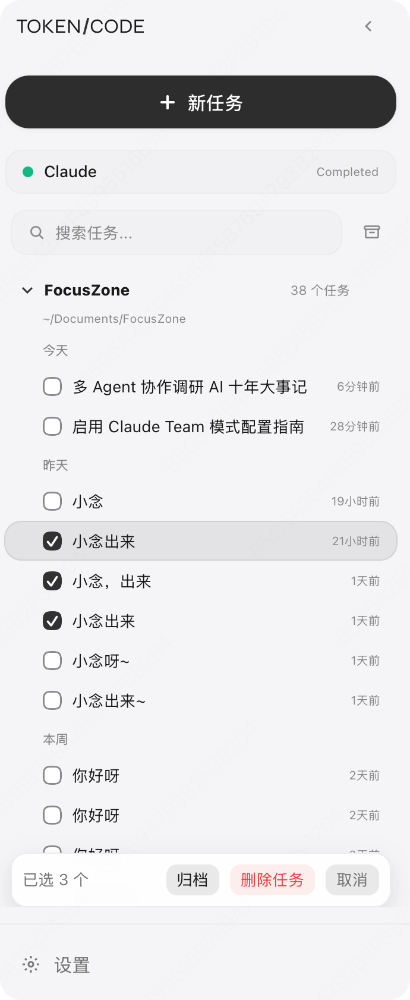
Browse your project tree with SVG icons for 20+ file types. Files modified by Claude show change markers. Create files and folders inline. Built-in CodeMirror editor with syntax highlighting for 12+ languages. Double-click to open in VS Code.
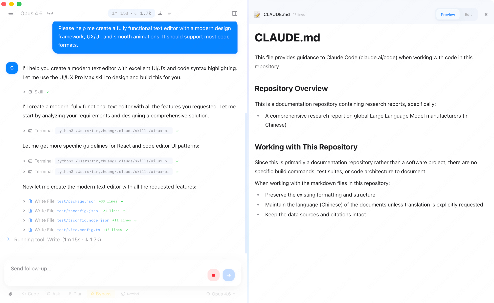
Made a wrong turn? Rewind code changes, conversation history, or both — independently. Powered by Claude CLI's native checkpoint system. Restore files to any previous state without losing your chat context.
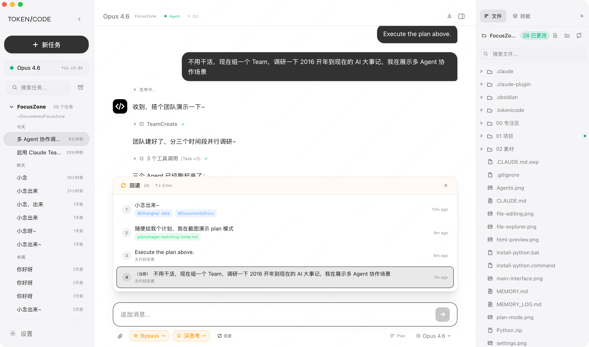
Every panel, every detail — designed to feel right.
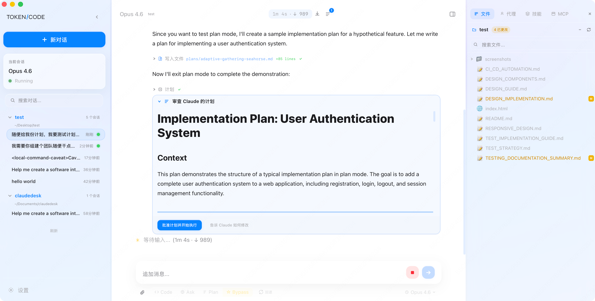
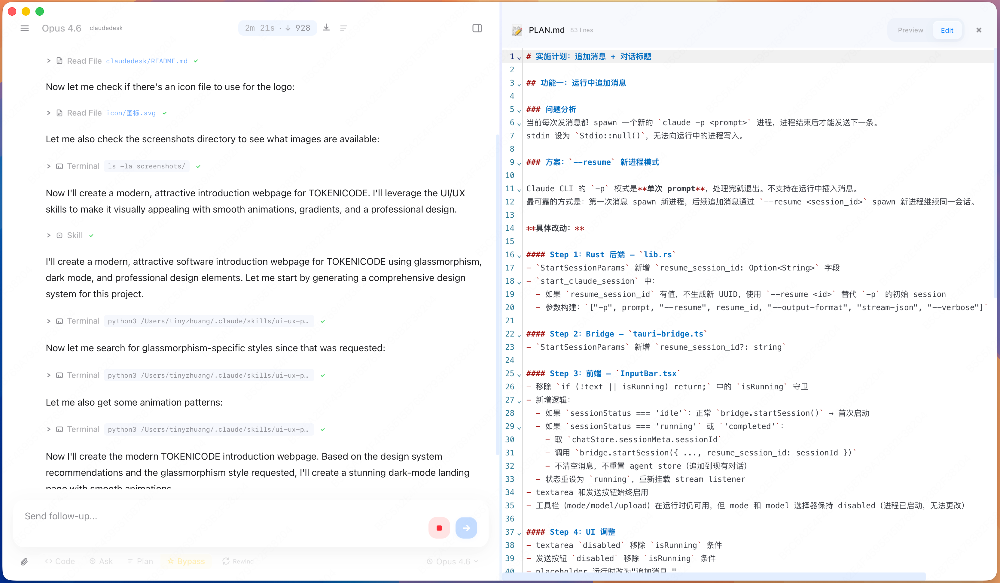
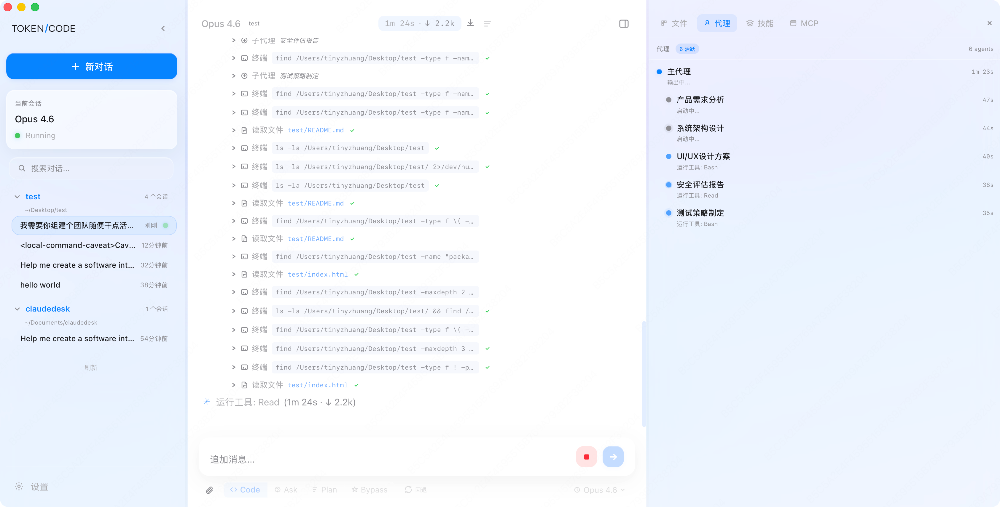
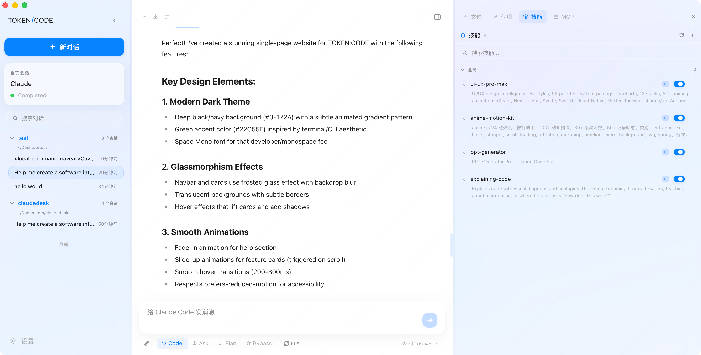
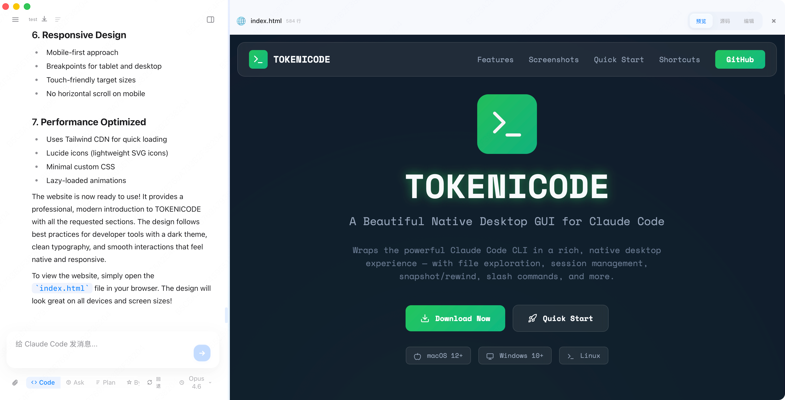
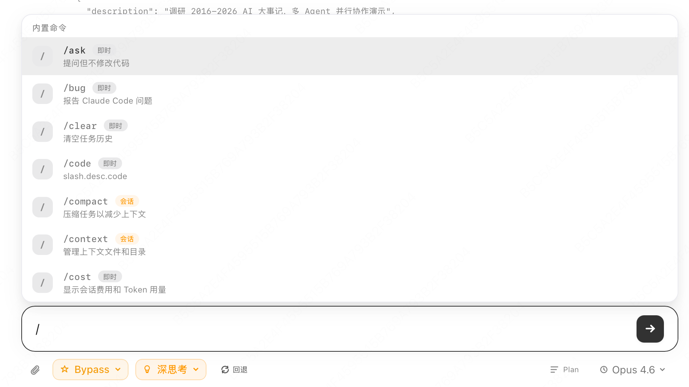
Every action is one shortcut away. On Windows/Linux, replace Cmd with Ctrl.
A lean, fast stack for a native desktop experience.
Free and open source. macOS · Windows · Linux.
Apache 2.0 License